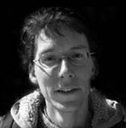

krvik totr >
|
 |
Petr Jediný Novotný |
bio >
1979 > narozen 20. 2. 1979 v Praze > porozen do kulturou žijící rodiny: matka Jiřina knižní redaktorka, příležitostná básnířka (Óda na hovno, 1965) a neustávající podpora Krvik Totr; otec literární vědec; babička překladatelka; a hlavně dědeček Oldřich, surrealistický básník a filosof, který byl "všechno", nač si vzpomenete >>
1987 > ve třetí třídě se PJN poznal s Tomášem Koutem a Filipem Votavou > na letním táboře 1989 přestal bojovat s Koutem a společně zinscenovali hru o upíru Uriášovi >>
1987 > od dětství literární parodistická tvorba (první za něco stojící v roce 1987 Naše dějiny v datech) >
1990-5 > časopis Asterix s přílohou Hřbitovní noviny (celkem 20 čísel) >
1992 > založil s Tomášem Koutem dvojici Krvik Totr, nejprve pro legraci, již po roce snaha o vývoj a původní tvorbu >>
1993-7 > studium literárního Soukromého gymnázia Josefa Škvoreckého, tam
od 1995 > navštěvoval vůbec první Literární seminář tvůrčího psaní v ČR (pod vedením Alexandry Berkové) > 1997 získal 3. místo za prózu Sedmikráska v celorepublikové soutěži O cenu Danny Smiřického > jeho texty v této době posunuly Krvik Totr do vážnější polohy alba Krví >
1997 > nezměrná touha studovat DAMU > zavelel směrem k divadlu, když změnil povídku Sáha rodu Rokoců na hru, poté vizualizoval první živé povídky >
1997-2001 > studium žurnalistiky FSV UK zakončené titulem Bc. > orientace výhradně na kulturní publicistiku (do roku 2003 pravidelné články v Týdeníku Rozhlas či Dobré adrese, poté příležitostně; v roce 2003 ještě významná participace v redakci časopisu ...tsunami... festivalu ...příští vlna/next wave..., od 2004 grafikem časopisu KATaP Řečiště) > absolvování mj. předmětů Tvůrčí dílny - povídka (D. J. Novotný) a Kreativita v jazyce (Otakar Šoltys) > s Evou Vlčkovou provozována experimentální dvojice Sijamská dvojčata (1999), se Zuzanou Bubnovou spolupráce na hře Šest lidí u stolu (2000 - v rámci jejího předvedení první veřejné účinkování na divadle mimo Krvik Totr) >>
1998-2002 > s Pavlem Langhammerem provozoval neveřejně experimentální literárně-hudební dvojici PPP >>
2000 > 1. místo v soutěži O cenu Danny Smiřického za hru Fuj In Soya Oil, kterou napsal s Adélou Tesaříkovou v rámci občasné skupiny Všemi směry (založeno a hra napsána v roce 1997) >>
2001 > s Filipem Votavou založil hudební free-formovou kreaci Petarda (2003 přejmenovanou na Sdružení pro obnovu dramatické písně Filtr a veřejně aktivní) a v témže roce nulté (a prozatím jediné) číslo časopisu časopes >>
2001-4 > nedokončené studium Literární akademie, orientace na drama - hodiny Tvůrčího psaní u Daniely Fischerové a Milana Uhdeho - D. Fischerová vedla ve 3. ročníku jeho dramatickou práci Mor Amorův >>
2003-8 > studium katedry autorské tvorby a pedagogiky DAMU (navazující magisterské studium), pod vedením Ivana Vyskočila (dialogické jednání) a vedle dalších Přemysla Ruta (autorské čtení a písnička), Vítězslavy Fryntové (přednes), Jany Pilátové (antropologické integrační dílny) a Zdeny Hadrbolcové/Jana Hančila/Jarušky Pokorné (herecká propedeutika), Zdeničky Kratochvílové/Moniky Rebcové (pohyb) > zakončeno diplomovou prací Proměna autorství a titulem MgA. >>
od 2004 > příležitostný zvukař/osvětlovač projektů přátel (2004-6 všechna uvedení inscenace Crave v Rubínu; 2005 Bakchantky; 2005 projekty KATaP - Mexico Lucie Marquezové, Takový normální večer Markéty Hrubínové a Veroniky Hrčkové; od 2005 stálá spolupráce s autorským pořadem Boršč Evy Čechové (Špreňarové) a Hanky Malaníkové) >>
2005/6 > dramaturg pořadů Bon jour fixe Katedry autorské tvorby DAMU v Klubu v Jelení >>
2006 > absolventské představení KATaP - autorská inscenace "nahoře" s Lucií Krupičkovou a Soniou Cieślar v Řetízku (malá scéna DISKu) - spoluscénář, spolurežie, herec, hudební režie, lightdesign a technika >>
2007 > autorská inscenace Ona & On se Zuzkou Macákovou a Filipem Votavou v Malém Nosticově divadle/Nablízku a Řetízku - spoluscénář, spolurežie, herec, hudební režie, lightdesign, technika a produkce >>
2007/8 > studijní stáž ve Francii na UFR Arts (dép. Arts du spectacle - Master 2 Pro) Université Michel de Montaigne - Bordeaux III. > 2008 zakončeno absolventským představením: autorská inscenace ve francouzštině Des centaines s Hammou Bullivavalevou v Carré des Jalles - scénář, režie, scénografie, lightdesign, zvuk, hudební režie, herec > obhajoba závěrečné diplomové práce En français >>
2008 > v únoru rozpouští z osobních důvodů Divadílnu a omezuje Krvik Totr na zakládající dvojici; pozastavuje na neurčito činnost Krvik Totr >
>> v Krvik Totr obstarává vedle společného psaní a hraní ještě režii (první léta sám, od 2003 s TK), studiové nahrávky, veškeré výtvarné práce a propagaci s manažerstvím, produkcí a webem...
>> mimo Krvik Totr se v umění jako herec vyskytuje jen zcela výjimečně (např. malá role ve filmu Luboše Pavla Štěkot, 2004, či v dokumentu Pavla Kolaji o Ivanu Vyskočilovi, 2006; hercem a spolupracovníkem na scénáři/režii v projektu Luboše Pavla Kdo hledá, najde (Piráti), 2006/7) >>>
|
visitez . . . |
| zpátky mezi lidi |
|
|
Tomáš Kout |
bio >
1979 > narozen 28. 8. 1979 do Nového Vestce > umělecké sklony podědil po předcích z matčiny strany: 1.) pradědeček babičky (Eva Pavelková) F. J. Frankl, kabaretní komik, založil první český tingl-tangl (ve dvojici s Josefem Bachmanem) (Franklův text posloužil jako podklad Árie pani domácí v Návratu z proutí); 2.) jeho syn (dědeček Tomášovy babičky) Jan Frankl byl dlouholetým uměleckým maskérem Malostranské besedy; 3.) bratrancem této neobyčejné ženy je spisovatel Ivan Klíma >>
1982-4 > první nahrávky iniciované dědečkem Zdeňkem Koutem >
cca 1985 > improvizované "vystoupení" pro cestující na lince Brandýs nad Labem/Stará Boleslav na interní mikrofon autobusu >
1987 > se rodina přestěhovala do Prahy >> seznámení s PN a FV > během ZŠ nemnoho pokusů o vtipnou povídku - inspirace povídkami Šimka a Grossmanna, humorem Jaroslava Žáka a činorodostí PN >
1990 > na táboře v Hořičkách vystoupení pro 2 divačky (praktikantky) s povídkou Šumákovo hospodářství (Š+G), již přednesl víceméně zpaměti >
1992 > založil s PN dvojici Krvik Totr, nejprve pro legraci, již záhy snaha o vývoj a původní tvorbu >>
1993 > zúčastnil se natáčení studentského filmu FAMU (dodnes s nejasným výsledkem) >>
1993-6 > hotelová škola v Poděbradech (nedokončil) > veškerých uměleckých počinů se účastní z popudu druhých, proto po odchodu do Poděbrad výrazný útlum tvorby >
1995 > rozpracováno několik námětů v reakci na Novotného Vokovický park (1994), nic nedokončil >
1996-9 > zpět do Prahy, přestup na Gymnázium prof. Jana Patočky, zde pubertálně-melancholické tvůrčí pookřání, pouze pro šuplík > 1999 literární referát na téma Semafor naznačil zájem o divadla malých forem >
1999-2001 > studium VŠCHT, ukončeno pro neplnění studijních povinností (práce na Stříbrné straně 20. století) > 2000 začíná číst hry V+W >
2001 > (leden) si konečně uvědomil a připustil zájem o divadlo a ze zvědavosti se hlásí na VOŠ hereckou v Michli >>
2001-4 > studium Vyšší odborné školy herecké a moderátorské, ve skupině Lucie Trmíkové a Jana Nebeského, kteří zásadním způsobem ovlivnili jeho nahlížení na divadlo a život vůbec >
2001-4 > účinkování v několika absolventských představeních v Pidivadle (nejvýznamnější - kromě Míši Kuličky - jsou Zdravý nemocný, Crave a Bakchantky) >
2002 > natáčel pohádku O princezně Kateřině a lesní víle Leontýně (role prince Jaromíra; r. Jaroslav Bouše) > 2003 účinkuje v klipu Oheň a sníh skupiny 220V >
2004 > se stal členem Divadla Extrém (inscenace Naše Pobřežní hlídka, Harry Lotter, Někdo to rád sýra ad.) >
2004-5 > kombinované studium Teorie a dějin divadla na Masarykově univerzitě v Brně >
2004 > vcelku pravidelně navštěvuje hodiny Dialogického jednání na KATaP DAMU pod vedením Ivana Vyskočila (navazuje od 2007) >
2004-6 > inscenace Crave (původně Pidivadlo) se stala domovskou inscenací A-studia Rubín >
2004-5 > účinkuje v černém divadle Animato v inscenaci Yellow Submarine >
od 2005 > během zkoušek Návratu z proutí (2005) mu zachutnala režie, zato produkcí (Bakchantky) je znechucen >
od 2006 > zaměstnán v Intercateringu >>>
další krvik totr >
| zpátky mezi lidi |
|
|
Filip Votava |
bio >
1979 > narozen 6. 1. 1979 v Praze > kulturní rodina: matka Helena několikrát vystoupila v pořadu televize NDR Ein Kessel Buntes, babička odehrála roli Dory v Tartuffovi v Nelahozevsi na nádvoří, dědečkovi Oldřichovi něco otiskli i v Ruďásku >> na přelomu prvého a druhého stupně základní školy vydal 3 čísla populárně naučného časopisu s provizorním názvem Naše rodina pro členy své rodiny >
1987 > ve třetí třídě se poznal s Petrem (tehdy nejediným) Novotným a Tomášem Koutem >
1993–7 > studium Obchodní akademie, na rozloučenou se blýskl maturitní písemnou prací z českého jazyka na téma Vy zíráte, my zíráme (fejeton o všudypřítomnosti reklamy, skartováno 2002), čtenou před všemi čtvrtými ročníky >
od 1994 > spolupráce s Krvik Totr typu „Pes jitrničku sežral“ apod. >
od 1996 > privátní hrátky v kytarovém duu s Pepou Šimonem >
1997–2000 > studium tzv. Vyšší odborné školy cestovního ruchu a hotelnictví, obor průvodcovství, zakončené tzv. absolutoriem a titulem DiS. >
od 2000 > další Krvik Totr > herec a výhradní autor veškeré hudby (od 2005 se o hudbu dělí se Soniou Cieślar)
2000-2 > civilní služba na novobutovické škole >
od 2002 > zaměstnán v cestovním ruchu nebo teletextu nebo nezaměstnán >>
2001 > založil s Petrem Novotným freeformovou kreaci Petarda (2003 přejmenovanou na Sdružení pro obnovu dramatické písně Filtr) - ústředním počinem CD Teroristé to mají jisté (2002), od 2004 pravidelné vstupy Filtru do představení Krvik Totr
2003-4 > březen nebo duben 2003 až květen nebo červen 2004 baskytarista skupiny Sextet orange >
od ledna 2004 > bere hodiny hry na baskytaru u Petra Pavlíka (Yo Yo Band, Anticage) v rockové škole Come To Jam >
od podzimu 2004 > se z kytarového dua Filip/Pepa stává skupina P.O.City (dále hrají Petr Řehák, Filip Kutiš a Monika Rončáková), expandující i občasnými koncerty
>> v Krvik Totr byl do 2005 výhradním autorem hudby a vždy tradičním třetím v tradičních scénkách >>>
| zpátky mezi lidi |
© 2003 Krvik Totr Limity.